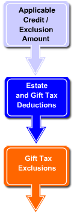

|
|
The Resources of Estate Planning

Having discussed the fundamental documents that are involved in developing an estate plan, we now turn our attention to the strategies that are utilized to minimize estate taxes. The primary resources available for minimizing estate taxes are to be found within the transfer tax system itself. Buried within the volumes of obtuse tax codes and regulations is a staggering array of possibilities. Fortunately, most tax- saving resources can be grouped into the three categories that appear to the left. There are other categories, to be sure, and the list of possible tools or techniques within some categories can be extensive. But for the majority of estate planning opportunities, these three suffice.
These resources are available to everyone; but their benefits are not necessarily automatic. Careful planning is often necessary, and specific tools or techniques have been developed to obtain their optimum benefit for various situations. We will discuss those, but first, let’s do a quick review of the resources themselves.